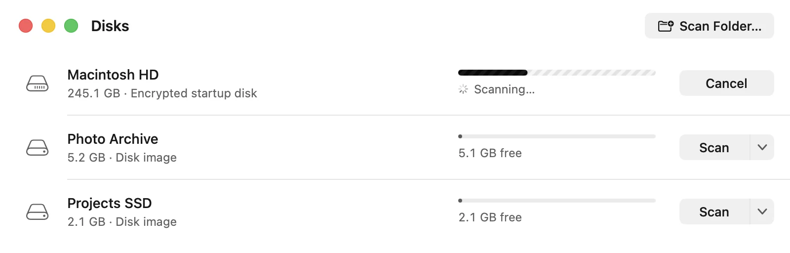
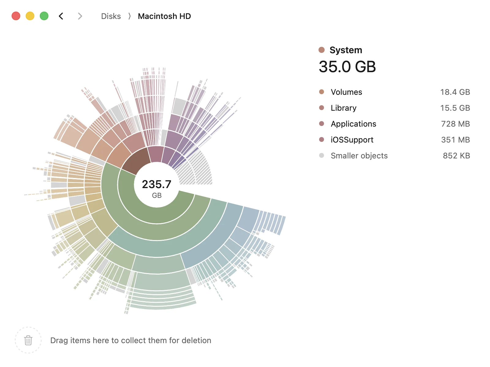
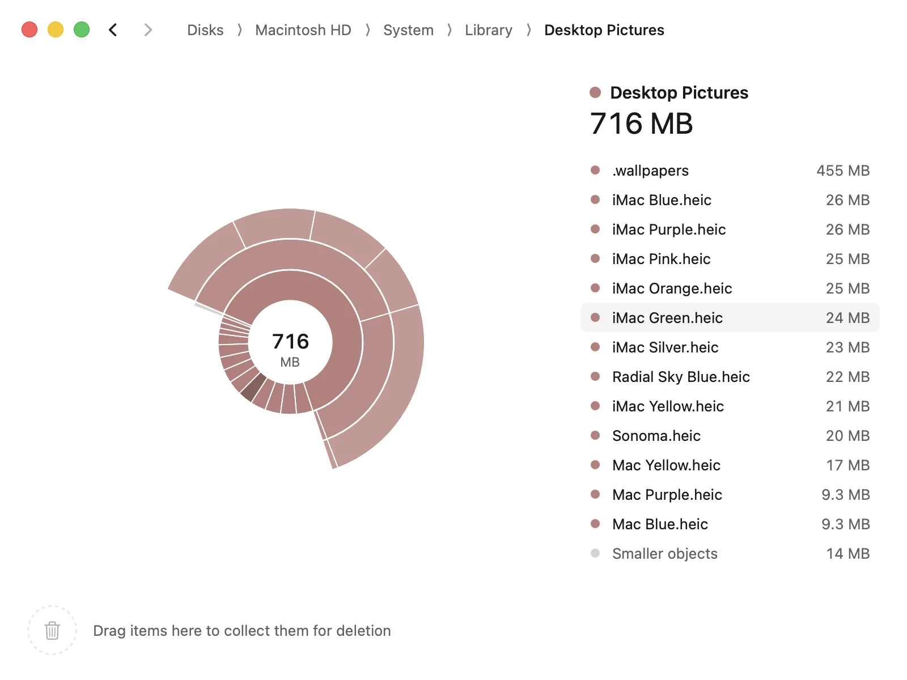
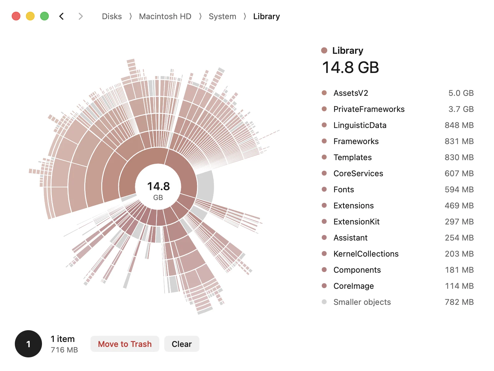
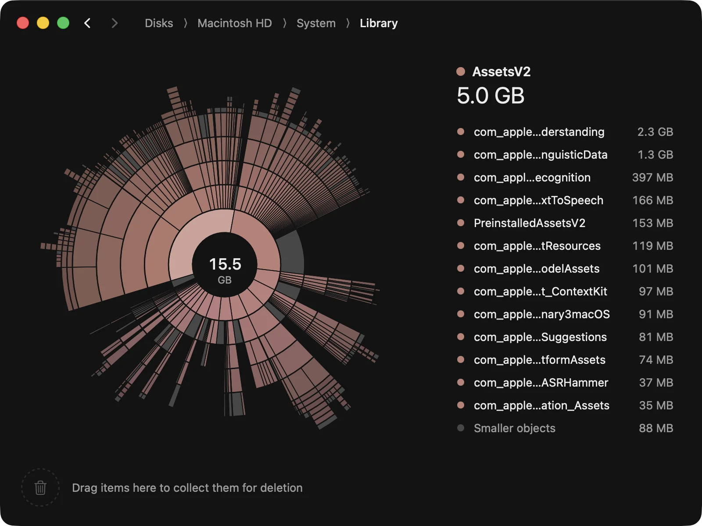
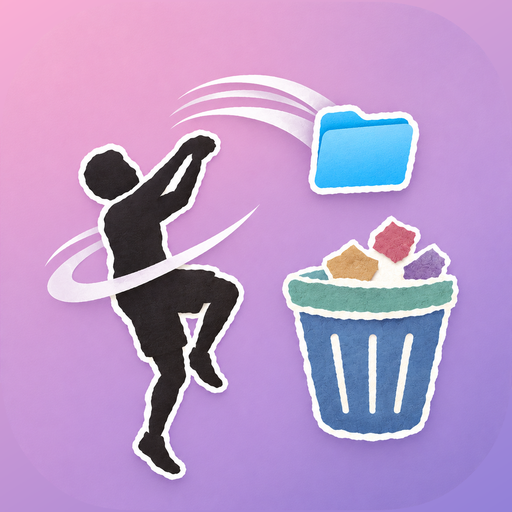
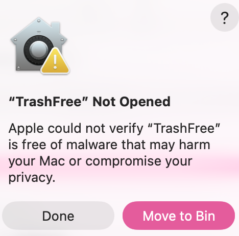
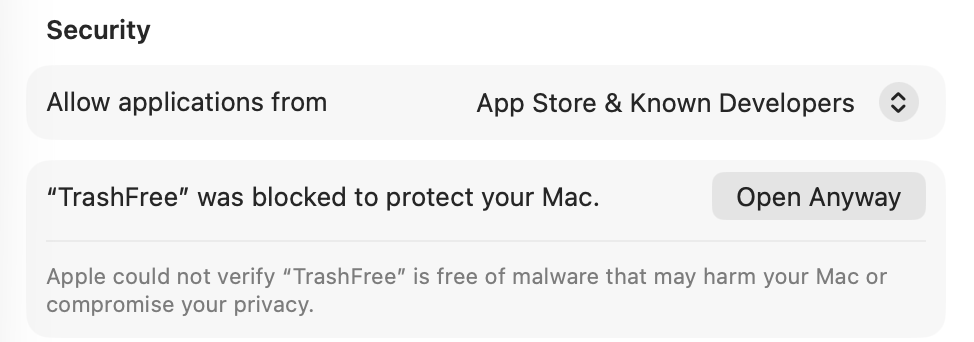

One map for your whole disk,
and everything on it.
TrashFree maps your disk as rings you can read at a glance. Find the folders that grew, drag them to the collector, and move them to the Trash in one click.
Free · macOS 13 or later · Apple silicon and Intel
- ScanEvery byte, fast
- SeeRings, not lists
- ZoomClick to go deeper
- CollectDrag what can go
- FreeOne click to Trash
Scan
Every disk Finder shows, measured in seconds
Pick your startup disk, an external drive, or any folder. TrashFree reads the whole tree in parallel and counts what each file really takes on disk, so clones and hard links are counted once.
- Startup disk, external drives, and disk images
- A live progress bar, never a spinning guess
- Free and purgeable space shown up front

See
Point at a ring and it tells you what's inside
Each ring is one level deeper. Arc size is file size, and color follows where a folder sits, so it keeps its color as you move around. Hover any arc and the list on the right shows what it holds.
- The biggest folders are the biggest arcs
- Hidden and purgeable space, labeled
- The chart never jumps while you hover

Zoom
Click to dive in. Click the center to come back
Zooming animates between levels, so you always see where you came from. The path along the top keeps every step one click away, even five folders down.
- Smooth zoom in and out, about 0.4 seconds
- Back and forward, like a browser
- Long paths fold up and open on hover

Collect
Drag it to the collector. Watch the space open up
Drag an arc or a row from the list to the collector in the corner. It leaves the map at once, so you see the room you are about to free before anything is deleted.
- Collect from the map or from the list
- Changed your mind? Clear puts it all back
- Move to Trash in one click, still recoverable

Light and dark
Quiet by design, day or night
A calm black-and-white window that follows your Mac's appearance. The only color is the map itself.

Privacy
Your files never leave your Mac
TrashFree has no account, no analytics, and makes no network requests. It asks once for Full Disk Access, so it can see everything and macOS stops asking folder by folder. Say no and it still scans what it can reach.
- Network
- None
- Account
- None
- Deletes
- Only what you collect, to the Trash
Allow Full Disk Access
To measure every folder, TrashFree needs Full Disk Access. Without it, Mail, Messages, other apps' data, and system folders count as hidden space.
- Open Full Disk Access in System Settings.
- Turn on TrashFree.
- Come back here. The scan starts on its own.
Install
Open it the first time
TrashFree is not notarized by Apple yet, so macOS asks you to approve it once. It takes three steps and under a minute.
-
Download and unzip
Download TrashFree.zip, double-click it, and drag TrashFree from the new folder into Applications.

TrashFree.app -
Open it and click Done
macOS shows
TrashFree Not Opened
. Click Done. Don't move it to the Bin.
-
Click Open Anyway
Open System Settings › Privacy & Security and scroll to Security. Click Open Anyway, confirm with your password or Touch ID, then click Open.

That's it. From now on TrashFree opens like any other app. Before the first scan it asks for Full Disk Access, so it can measure every folder.
Questions
What is "hidden space"?
Used space the scan could not read: other users' files, system areas, and local snapshots. With Full Disk Access it shrinks to what macOS keeps to itself.
Can I undo a delete?
Yes. Move to Trash puts items in the Trash, so you can put them back from Finder until you empty it.
Why does it ask for Full Disk Access?
Without it, macOS hides Mail, Messages, and app data from every app, and asks about Desktop, Documents, and Downloads one at a time. One grant answers all of that.
macOS says it can't check TrashFree for malware. Is that safe?
TrashFree is not notarized by Apple yet, so macOS stops the first launch. Click Done, then Open Anyway in System Settings › Privacy & Security. The install steps show both screens. You only do this once. The source code is public if you'd rather build it yourself.
Which Macs does it run on?
Any Mac with macOS 13 Ventura or later, on Apple silicon or Intel.
Get your space back.
Free for macOS. No account, no subscription. How to install